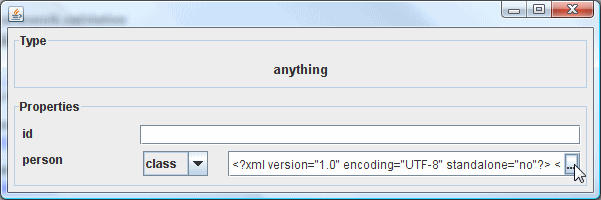

In this section we'll look at the Arooa Framework without Oddjob. Arooa was written for the requirements of Oddjob and not to be yet another Java Bean framework. These are the reasons for writing Arooa over using an existing framework:
If you share these requirements and want to use Arooa in your own code thenn read on. If you don't then read on anyway - you might find it interesting.
An ArooaParser
is the starting point for most things Arooa. An ArooaParser parses an
ArooaConfiguration
When an ArooaParser parses an ArooaConfiguration
it generally creates something. That something
is typically some Java Beans, but might be a GUI form, or some XML.
An ArooaConfiguration is generally something that can be parsed. That
something is typically some XML but it might be a GUI form, or some Java Beans.
So we can go from XML to Beans to Forms to Beans to XML, and this is pretty much what we do.
The three main ArooaParsers of interest are
StandardArooaParser
for Beans,
DesignParser
for Forms, and
XMLArooaParser
for XML.
There's only one main ArooaConfiguration which is
XMLConfiguration.
For Beans and Forms the ArooaConfiguration is
captured in their contexts. What's their contexts? It's their
ArooaContext
but more on them later.
Let's take a closer look at our three somethings.
Most of the time Arooa configures a single Bean, because you know what you want
to configure. The StandardArooaParser takes a root Object and
applies the configuration to it. A
StandardFragmentParser
can be used instead which will create the object if that's what you require.
It's use is very similar to what will be described here.
Let's start with the ThirdComponent we couldn't configure
in the previous section.
Here's the configuration for just our component:
{@oddjob.xml.file examples/devguide/exposed1.xml}Note that the document element can be anything, as it's not used for Object creation. Here's the code that will configure a our ThirdComponent:
{@oddjob.java.file src/main/java/org/oddjob/devguide/StandardAPExample.java}
The StandardArooaParser treats our root Object as a component.
Because of this we can configure it using the line
session.getComponentPool().configure(component);
Attempting to independently configure the components person would not
be possible.
session.getComponentPool().configure(component.getPerson());
would throw an Exception.
When we run it we get:
Person Set.
Now there's loads I need to explain.
ArooaSession
- What it is and how it's used.ComponentPool
- What it is.ArooaDescriptor to define a Component Property
to allow begin building up a component tree.But I'm just not going to get round to it just now. I'm sorry. Maybe next time.
Lets take a quick look at how to create a form.
package org.oddjob.devguide;
import java.awt.Component;
import java.io.File;
import javax.swing.JFrame;
import javax.swing.WindowConstants;
import org.oddjob.arooa.ArooaParseException;
import org.oddjob.arooa.design.DesignFactory;
import org.oddjob.arooa.design.DesignInstance;
import org.oddjob.arooa.design.DesignParser;
import org.oddjob.arooa.design.GenericInstanceFactory;
import org.oddjob.arooa.design.view.SwingFormFactory;
import org.oddjob.arooa.parsing.ArooaContext;
import org.oddjob.arooa.parsing.ArooaElement;
import org.oddjob.arooa.xml.XMLConfiguration;
public class DesignParserExample {
public static void main(String[] args) throws ArooaParseException {
XMLConfiguration configuration =
new XMLConfiguration(new File("examples/devguide/exposed1.xml"));
DesignParser parser = new DesignParser(
new DesignFactory() {
public DesignInstance createDesign(boolean component,
ArooaElement element, ArooaContext parentContext) {
return new GenericInstanceFactory().buildDesign(
component,
element,
ThirdComponent.class.getName(),
parentContext);
}
});
parser.setComponent(true);
parser.parse(configuration);
DesignInstance design = parser.getDesign();
Component view = SwingFormFactory.create(design.detail()).dialog();
JFrame frame = new JFrame();
frame.getContentPane().add(view);
frame.pack();
frame.setVisible(true);
frame.setDefaultCloseOperation(WindowConstants.DISPOSE_ON_CLOSE);
}
}
Run it and we get a very simple form:
The id property is added because we told the parser our design is for a component.
Here's how to use
XMLArooaParser
to go from XML back to XML.
package org.oddjob.devguide;
import java.io.File;
import org.oddjob.arooa.ArooaParseException;
import org.oddjob.arooa.xml.XMLArooaParser;
import org.oddjob.arooa.xml.XMLConfiguration;
public class XMLParserExample {
public static void main(String[] args) throws ArooaParseException {
XMLConfiguration configuration =
new XMLConfiguration(new File("examples/devguide/exposed1.xml"));
XMLArooaParser parser = new XMLArooaParser();
parser.parse(configuration);
System.out.println(parser.getXml());
}
}
Any when we run it:
<?xml version="1.0" encoding="UTF-8" standalone="no"?>
<anything>
<person>
<class class="org.oddjob.devguide.Person" firstname="John" surname="Smith" title="Mr"/>
</person>
</anything>